《操作系统原理》实验报告
实验环境
- OS version:(Linux 3.4.7-1.fc16.i686.PAE)
uname -srv - Kernel source versionv(3.3.7-1)
ls /lib/modules/ - GCC version:(gcc (GCC) 4.6.3 20120306 (Red Hat 4.6.3-2))
gcc --version
目录
1 Process management
1.1 experimental content
1.2 steps of experiment
1.2.1 Process creation
- Task
- Both exit() and _exit() are used in the program. What's the difference?
- exit is defined in stdlib.h,_exit is defined in unistd.h.
- they both can terminate a process,and stop the operation,clear the PCB;but exit had done more things than _exit,exit also do the Memory dump(clear the buffered I/O),so that exit can ensure the integrity of the data,and _exit can't ensure that.
- Tell me about the following line of code
w = waitpid(cpid, &status, WUNTRACED | WCONTINUED);
answer: The waitpid() system call suspends execution of the calling process until a child(cpid) specified by pid argument has changed state.
- .
Compile and run the following 4 programs. Tell me what they do? And their differences.
- test1
#include <stdlib.h> #include <stdio.h> int main() { printf("Running ps with system\n"); system("ps -ax &"); printf("Done.\n"); exit(0); } +end_src *test1 after running* #+begin_example [matrix@localhost drafts]$ ./test1 Running ps with system Done. [matrix@localhost drafts]$ Warning: bad syntax, perhaps a bogus '-'? See /usr/share/doc/procps-3.2.8/FAQ PID TTY STAT TIME COMMAND 1 ? Ss 0:03 /sbin/init 2 ? S 0:00 [kthreadd] 3 ? S 0:00 [ksoftirqd/0] 6 ? S 0:00 [migration/0] 7 ? S 0:00 [watchdog/0] #+end_example - test2 :: ORG-LIST-END-MARKER #+begin_src c #include <unistd.h> #include <stdio.h> int main() { printf("Running ps with execlp\n"); execlp("ps", "ps", "-ax", 0); printf("Done.\n"); exit(0); }
test2 after running
[matrix@localhost drafts]$ ./test2 Running ps with execlp Warning: bad syntax, perhaps a bogus '-'? See /usr/share/doc/procps-3.2.8/FAQ PID TTY STAT TIME COMMAND 1 ? Ss 0:03 /sbin/init 2 ? S 0:00 [kthreadd] 3 ? S 0:00 [ksoftirqd/0]
- test3
#include <stdio.h> #include <unistd.h> int main(){ pid_t child_p; printf("Running ps with fork\n"); child_p = fork(); execlp("ps", "ps", "-ax", 0); return 0; }
test3 after running
[matrix@localhost drafts]$ ./test3 Running ps with fork Warning: bad syntax, perhaps a bogus '-'? See /usr/share/doc/procps-3.2.8/FAQ Warning: bad syntax, perhaps a bogus '-'? See /usr/share/doc/procps-3.2.8/FAQ PID TTY STAT TIME COMMAND 1 ? Ss 0:03 /sbin/init 2 ? S 0:00 [kthreadd] 3 ? S 0:00 [ksoftirqd/0] 6 ? S 0:00 [migration/0]
- test4
#include <unistd.h> #include <stdio.h> int main() { pid_t pid; printf("Running ps again with fork\n"); pid = fork(); if ( pid == 0 ) { // in the child, do exec execlp("ps", "ps", "-ax", 0); } else if (pid < 0) // failed to fork { printf("fork failed.\n"); exit(1); } else // parent { wait(NULL); } exit(0); }
test4 after running
[matrix@localhost drafts]$ ./test4 Running ps again with fork Warning: bad syntax, perhaps a bogus '-'? See /usr/share/doc/procps-3.2.8/FAQ PID TTY STAT TIME COMMAND 1 ? Ss 0:03 /sbin/init 2 ? S 0:00 [kthreadd] 3 ? S 0:00 [ksoftirqd/0] 6 ? S 0:00 [migration/0] 7 ? S 0:00 [watchdog/0] - Both exit() and _exit() are used in the program. What's the difference?
- summary
test1 print "Running ps with system" and print "Done",then execute ps -ax didn't return to the father shell.test2 print "Running ps with system" then execute ps -ax and return to the father shell.
test3 print "Running ps with system" then execute ps -ax didn't return to the father shell.
test4 print "Running ps with system" then execute ps -ax and return to the father shell.
- more on fork() and wait()
-
Compile and run the following program. Tell me why the output is weird (mixed with the $ prompt)? And fix it with the wait() system call.
#include <sys/types.h> #include <unistd.h> #include <stdio.h> int main() { pid_t pid; char *message; int n; printf("fork program starting\n"); pid = fork(); switch(pid) { case -1: perror("fork failed"); exit(1); case 0: message = "This is the child"; n = 7; break; default: message = "This is the parent"; n = 3; break; } for(; n > 0; n--) { puts(message); sleep(1); } exit(0); }
this is the output
[matrix@localhost drafts]$ ./orphan fork program starting This is the parent This is the child This is the child This is the parent This is the child This is the parent This is the child [matrix@localhost drafts]$ This is the child This is the child This is the child
because the fork(),it returns two value,one is 0,and another is a childID(default),so the "*This is the parent*" had print 3 times,and "*This is the child*" had print 7 times;the parent had ended loop first,so it back to the bash,at the same time the child needs three times loop,so it will continue to print "*This is the child*" until the end! so the child becomes a Orphan,who had no parent! Actually,this Orphan will be adopted by init!
but it's so easy to fix it,just need parent wait for the child
//a fixed file! #include <sys/types.h> #include <unistd.h> #include <stdio.h> int main() { pid_t pid; char *message; int n; printf("fork program starting\n"); pid = fork(); switch(pid) { case -1: perror("fork failed"); exit(1); case 0: message = "This is the child"; n = 7; break; default: message = "This is the parent"; n = 3; wait(NULL);//add a wait in there! so simple isn't it? break; } for(; n > 0; n--) { puts(message); sleep(1); } exit(0); }
- Task
- Read the NOTES section of wait manual page (man 2 wait) to get a clear idea about zombie processes.
And tell me why zombie is not welcomed.
answer: there are two way to create zombies:
- when the child process want to terminated,he will send a signal to father,but father ignored it;
- the father still there,but didn't wait or waitpid the child process.
- the orphan is adopted by init,but a zombie can't be adopted and it consumes the system source,if there are to many zombies, it will exhaust the system source.
- At the end of wait manual page (man 2 wait), there is an src program.
Play with it, and tell me about WUNTRACED, WCONTINUED, WIFEXITED
, WEXITSTATUS, WIFSIGNALED, WTERMSIG, WIFSTOPPED, WSTOPSIG,
WIFCONTINUED, pause().
//in file wait.c #include <sys/wait.h> #include <stdlib.h> #include <unistd.h> #include <stdio.h> int main(int argc, char *argv[]) { pid_t cpid, w; int status; cpid = fork(); if (cpid == -1) { perror("fork"); exit(EXIT_FAILURE); } if (cpid == 0) { /* Code executed by child */ printf("Child PID is %ld\n", (long) getpid()); if (argc == 1) pause(); /* Wait for signals */ _exit(atoi(argv[1])); } else { /* Code executed by parent */ do { w = waitpid(cpid, &status, WUNTRACED | WCONTINUED); if (w == -1) { perror("waitpid"); exit(EXIT_FAILURE); } if (WIFEXITED(status)) { printf("exited, status=%d\n", WEXITSTATUS(status)); } else if (WIFSIGNALED(status)) { printf("killed by signal %d\n", WTERMSIG(status)); } else if (WIFSTOPPED(status)) { printf("stopped by signal %d\n", WSTOPSIG(status)); } else if (WIFCONTINUED(status)) { printf("continued\n"); } } while (!WIFEXITED(status) && !WIFSIGNALED(status)); exit(EXIT_SUCCESS); } }
the out put is a zombie :
[matrix@localhost 101152025]$ ./wait Child PID is 5693
- Compile and run the following small program
/* zombie test. */ #include <sys/types.h> #include <unistd.h> #include <stdio.h> int main() { pid_t pid; switch(pid = fork()) { case -1: perror("fork failed"); exit(1); case 0: printf(" CHILD: My PID is %d, My parent's PID is %d\n", getpid(), getppid()); exit(0); default: printf("PARENT: My PID is %d, My child's PID is %d\n", getpid(), pid); printf("PARENT: I'm now looping...\n"); while(1); } exit(0); }
/*the out put*/ [matrix@localhost 101152025]$ ./zombie_test PARENT: My PID is 6103, My child's PID is 6104 PARENT: I'm now looping... CHILD: My PID is 6104, My parent's PID is 6103
you can check it with top.
- Read the NOTES section of wait manual page (man 2 wait) to get a clear idea about zombie processes.
And tell me why zombie is not welcomed.
- after that,these are what i had finished!
- Write a similar program that leaves 5 zombies.
//this is what i write at 5zombies #include <sys/types.h> #include <unistd.h> #include <stdio.h> #include <stdlib.h> int main() { pid_t pid; pid = fork(); if(pid < 0) printf("error occurred!\n"); else if(pid == 0) { printf("Hi father! I'm a ZOMBIE1\n"); exit(0); //(1) } else { pid = fork(); if(pid < 0) printf("error occurred!\n"); else if(pid == 0){ printf("Hi father! I'm a ZOMBIE2\n"); exit(NULL); } else{ pid = fork(); if(pid < 0) printf("error occurred!\n"); else if(pid == 0){ printf("Hi father! I'm a ZOMBIE3\n"); exit(NULL); }else{ pid = fork(); if(pid < 0) printf("error occurred!\n"); else if(pid == 0){ printf("Hi father! I'm a ZOMBIE4\n"); exit(NULL); }else{ pid = fork(); if(pid < 0) printf("error occurred!\n"); else if(pid == 0){ printf("Hi father! I'm a ZOMBIE5\n"); exit(NULL); }else{ while(1); } } } } } }
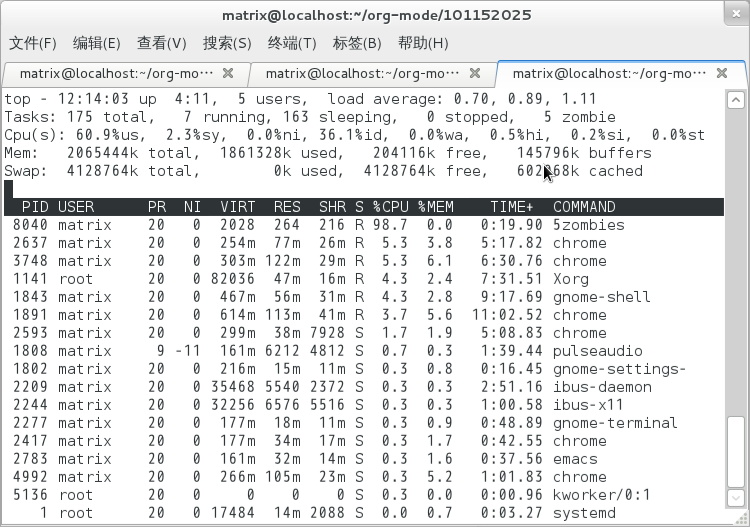
- Tell me what's the difference between a zombie
process and a orphan process?
answer: the orphan is adopted by init,but a zombie can't be adopted and it consumes the system source,if there are to many zombies, it will exhaust the system source.
- Read Beginning Linux Programming, Chapter 11, page 503
to learn how to avoid zombies with waitpid() system call. And
correct the above program.
answer:
we can take a trick,just fork it twice,then the second child will be adopted by init,and parent need not to wait for second child. you can compile the file avoid_zombie.c
/* zombie avoid. */ #include <sys/types.h> #include <unistd.h> #include <stdio.h> int main() { pid_t pid; switch(pid = fork()) { case -1: perror("fork failed"); exit(1); case 0: printf(" CHILD: My PID is %d, My parent's PID is %d\n", getpid(), getppid()); switch(pid = fork()) { case -1: perror("fork failed"); exit(1); case 0: printf(" CHILD: My PID is %d, My parent's PID is %d\n", getpid(), getppid()); sleep(2); //to ensure the first child exit before the second child exit(0); default: printf("PARENT: My PID is %d, My child's PID is %d\n", getpid(), pid); printf("PARENT: I'm now free\n"); wait(NULL); } exit(0); default: printf("PARENT: My PID is %d, My child's PID is %d\n", getpid(), pid); printf("PARENT: I'm waiting first child\n"); wait(NULL); } exit(0); }
this is out put
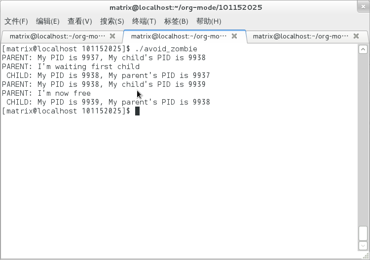
- Tell me the difference between exit() and return.
answer:
exit() causes the program to exit with the argument as return value. The return statement only returns from a function to its caller. In main(), this amounts to exiting the program.
- Write a similar program that leaves 5 zombies.
1.2.2 Thread
- Tasks
- At the end of pthread_create manual
page (man 3 pthread_create), there is an
example program. Play with it, and then tell me:
- What's the tinfo[]?
answer: it's a data structure that contains some info about thread.
- What's the res?
answer: it's a resource that thread oppcupied.
- What's the tinfo[]?
- At the end of pthread_attr_init manual page
(man 3 pthread_attr_init), there is an example
program. Compile and run it.
#define _GNU_SOURCE /* To get pthread_getattr_np() declaration */ #include <pthread.h> #include <stdio.h> #include <stdlib.h> #include <unistd.h> #include <errno.h> #define handle_error_en(en, msg) \ do { errno = en; perror(msg); exit(EXIT_FAILURE); } while (0) static void display_pthread_attr(pthread_attr_t *attr, char *prefix) { int s, i; size_t v; void *stkaddr; struct sched_param sp; s = pthread_attr_getdetachstate(attr, &i); if (s != 0) handle_error_en(s, "pthread_attr_getdetachstate"); printf("%sDetach state = %s\n", prefix, (i == PTHREAD_CREATE_DETACHED) ? "PTHREAD_CREATE_DETACHED" : (i == PTHREAD_CREATE_JOINABLE) ? "PTHREAD_CREATE_JOINABLE" : "???"); s = pthread_attr_getscope(attr, &i); if (s != 0) handle_error_en(s, "pthread_attr_getscope"); printf("%sScope = %s\n", prefix, (i == PTHREAD_SCOPE_SYSTEM) ? "PTHREAD_SCOPE_SYSTEM" : (i == PTHREAD_SCOPE_PROCESS) ? "PTHREAD_SCOPE_PROCESS" : "???"); s = pthread_attr_getinheritsched(attr, &i); if (s != 0) handle_error_en(s, "pthread_attr_getinheritsched"); printf("%sInherit scheduler = %s\n", prefix, (i == PTHREAD_INHERIT_SCHED) ? "PTHREAD_INHERIT_SCHED" : (i == PTHREAD_EXPLICIT_SCHED) ? "PTHREAD_EXPLICIT_SCHED" : "???"); s = pthread_attr_getschedpolicy(attr, &i); if (s != 0) handle_error_en(s, "pthread_attr_getschedpolicy"); printf("%sScheduling policy = %s\n", prefix, (i == SCHED_OTHER) ? "SCHED_OTHER" : (i == SCHED_FIFO) ? "SCHED_FIFO" : (i == SCHED_RR) ? "SCHED_RR" : "???"); s = pthread_attr_getschedparam(attr, &sp); if (s != 0) handle_error_en(s, "pthread_attr_getschedparam"); printf("%sScheduling priority = %d\n", prefix, sp.sched_priority); s = pthread_attr_getguardsize(attr, &v); if (s != 0) handle_error_en(s, "pthread_attr_getguardsize"); printf("%sGuard size = %d bytes\n", prefix, v); s = pthread_attr_getstack(attr, &stkaddr, &v); if (s != 0) handle_error_en(s, "pthread_attr_getstack"); printf("%sStack address = %p\n", prefix, stkaddr); printf("%sStack size = 0x%x bytes\n", prefix, v); } static void * thread_start(void *arg) { int s; pthread_attr_t gattr; /* pthread_getattr_np() is a non-standard GNU extension that retrieves the attributes of the thread specified in its first argument */ s = pthread_getattr_np(pthread_self(), &gattr); if (s != 0) handle_error_en(s, "pthread_getattr_np"); printf("Thread attributes:\n"); display_pthread_attr(&gattr, "\t"); exit(EXIT_SUCCESS); /* Terminate all threads */ } int main(int argc, char *argv[]) { pthread_t thr; pthread_attr_t attr; pthread_attr_t *attrp; /* NULL or &attr */ int s; attrp = NULL; /* If a command-line argument was supplied, use it to set the stack-size attribute and set a few other thread attributes, and set attrp pointing to thread attributes object */ if (argc > 1) { int stack_size; void *sp; attrp = &attr; s = pthread_attr_init(&attr); if (s != 0) handle_error_en(s, "pthread_attr_init"); s = pthread_attr_setdetachstate(&attr, PTHREAD_CREATE_DETACHED); if (s != 0) handle_error_en(s, "pthread_attr_setdetachstate"); s = pthread_attr_setinheritsched(&attr, PTHREAD_EXPLICIT_SCHED); if (s != 0) handle_error_en(s, "pthread_attr_setinheritsched"); stack_size = strtoul(argv[1], NULL, 0); s = posix_memalign(&sp, sysconf(_SC_PAGESIZE), stack_size); if (s != 0) handle_error_en(s, "posix_memalign"); printf("posix_memalign() allocated at %p\n", sp); s = pthread_attr_setstack(&attr, sp, stack_size); if (s != 0) handle_error_en(s, "pthread_attr_setstack"); } s = pthread_create(&thr, attrp, &thread_start, NULL); if (s != 0) handle_error_en(s, "pthread_create"); if (attrp != NULL) { s = pthread_attr_destroy(attrp); if (s != 0) handle_error_en(s, "pthread_attr_destroy"); } pause(); /* Terminates when other thread calls exit() */ }
can't compile it with gcc,i don't know why? after doing some google,i find i need add an option gcc -lpthread to support some function,then i solved this problem.
here is the output of file pthread_attr_init.c
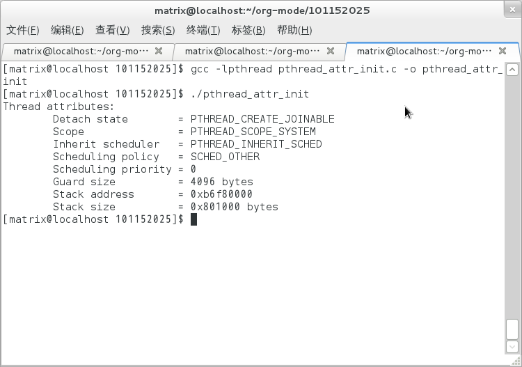
- Compile and run the following program
1: #include <pthread.h> 2: #include <stdio.h> 3: #include <stdlib.h> 4: 5: #define NUMBER_OF_THREADS 10 6: 7: void *print_hello_world(void *tid) 8: { 9: /* prints the thread's identifier, then exits.*/ 10: printf ("Thread %ld: Hello World!\n", (long)tid); 11: pthread_exit(NULL); 12: } 13: 14: int main(int argc, char *argv[]) 15: { 16: pthread_t threads[NUMBER_OF_THREADS]; 17: int status; 18: long i; 19: for (i=0; i<NUMBER_OF_THREADS; i++) 20: { 21: status = pthread_create(&threads[i], NULL, print_hello_world, (void *)i); 22: printf ("Main: creating thread %ld\n",i); 23: /* printf("thread id: %d\n",threads[i]); */ 24: 25: if(status != 0){ 26: printf ("Oops. pthread_create returned error code %d\n",status); 27: exit(-1); 28: } 29: if(pthread_join(threads[i], NULL)){ 30: printf("error joining thread."); 31: abort() ; 32: } 33: } 34: exit(0); 35: }
here is the output of pthread_lab.c
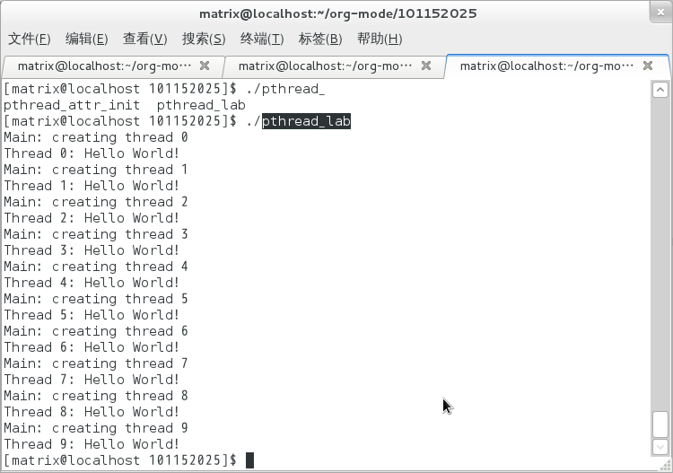
Now, remove the pthread_join call, i.e. comment out line 27-30. Compile and run it again for multiple times. Tell me the difference, and why?
after modified
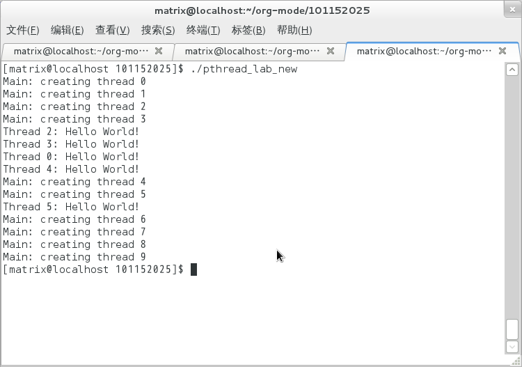
- pthread(parallel-thread)
there are some different without pthread_join
- pthread_join just like waitpid;because Main thread need to wait the pthread until it returned.so with the pthread_join function,the out put is neat crossed,like first picture above.
- after comment out the function pthread_join,the out put of course is Irregular crossed,like second picture.
- without pthread_join,it also will be this:
because the Main don't need to wait pthread,
it exit before create a pthread.
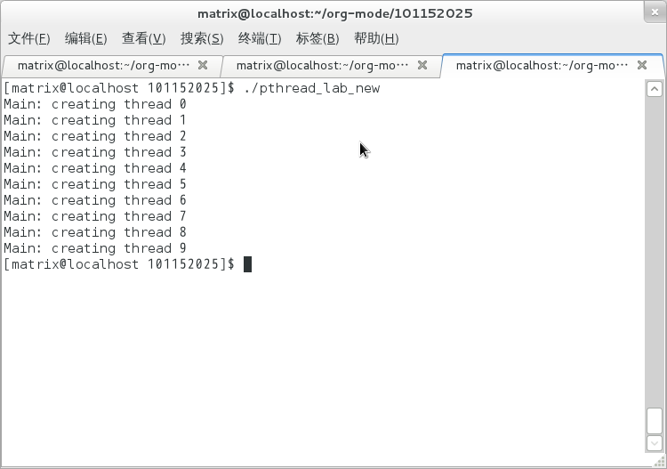
- At the end of pthread_create manual
page (man 3 pthread_create), there is an
example program. Play with it, and then tell me:
1.2.3 IPC
- Signals
- Task1 - understanding signal()
-
void (*signal(int sig, void (*func)(int)))(int); `-------------------v-------------' `----> *signal() is a function returning a 'function pointer' ` pointing to a function of type void(*)(int) `--> *signal() takes 2 arguments: . sig - an int . func - a 'function pointer' void(*)(int) void (*signal(int sig, void (*func)(int)))(int); void ( * )(int); `--------------------v------------------------' `---> void(*)(int) is a function pointer which is returned by function '*signal()' it's pointing to a function taking an int, returning void
- after reading signal():
- inside of void():
just as the comment,* signal is a function returning a 'function pointer' pointing to a function of type void(* )(int),and * signal takes 2 arguments: sig - an int, func - a 'function pointer' void(* )(int)
- outside of void():
void(* )(int) is a function pointer which is returned by function '* signal' it's pointing to a function taking an int, returning void.
- Task2 - sigaction()
-
Following Beej's Guide to Unix IPC, section 3 to play with signals. And then tell me details about the following code
int sigaction(int signum, const struct sigaction *act, struct sigaction *oldact);
answer: The first parameter, sig is which signal to catch. This can be (probably "should" be) a symbolic name from signal.h along the lines of SIGINT. That's the easy bit.
The next field, act is a pointer to a struct sigaction which has a bunch of fields that you can fill in to control the behavior of the signal handler. (A pointer to the signal handler function itself included in the struct.)
Lastly oact can be NULL, but if not, it returns the old signal handler information that was in place before. This is useful if you want to restore the previous signal handler at a later time.
- inside of void():
- Pipe
- "These pipes are clean!"
matriux@localhost:~$ cat pipe.c
/*program 1 is a simplist pipe */ include <stdio.h> include <stdlib.h> include <errno.h> include <unistd.h> int main(void) { int pfds[2]; char buf[30]; if (pipe(pfds) == -1) { perror("pipe"); exit(1); } printf("writing to file descriptor #%d\n", pfds[1]); write(pfds[1], "test", 5); printf("reading from file descriptor #%d\n", pfds[0]); read(pfds[0], buf, 5); printf("read \"%s\"\n", buf); return 0; }
matriux@localhost:~$ ./a.out writing to file descriptor #4 reading from file descriptor #3 read "test"
- fork() and pipe()—you have the power!
#include <stdio.h> #include <stdlib.h> #include <errno.h> #include <sys/types.h> #include <unistd.h> int main(void) { int pfds[2]; char buf[30]; pipe(pfds); if (!fork()) { printf(" CHILD: writing to the pipe\n"); write(pfds[1], "test", 5); printf(" CHILD: exiting\n"); exit(0); } else { printf("PARENT: reading from pipe\n"); read(pfds[0], buf, 5); printf("PARENT: read \"%s\"\n", buf); wait(NULL); } return 0; } matriux@localhost:~/org-mode/101152025$ ./a.out PARENT: reading from pipe CHILD: writing to the pipe CHILD: exiting PARENT: read "test"
- The search for Pipe as we know it
#include <stdio.h> #include <stdlib.h> #include <unistd.h> int main(void) { int pfds[2]; pipe(pfds); if (!fork()) { close(1); /* close normal stdout */ dup(pfds[1]); /* make stdout same as pfds[1] */ close(pfds[0]); /* we don't need this */ execlp("ls", "ls", NULL); } else { close(0); /* close normal stdin */ dup(pfds[0]); /* make stdin same as pfds[0] */ close(pfds[1]); /* we don't need this */ execlp("wc", "wc", "-l", NULL); } return 0; }
matriux@localhost:~/org-mode/101152025$ ./a.out 64
- a modified file of pipe3
#include <stdio.h> #include <stdlib.h> #include <unistd.h> int main(void) { int pfds[2]; pipe(pfds); if (!fork()) { close(1); /* close normal stdout */ dup(pfds[1]); /* make stdout same as pfds[1] */ close(pfds[0]); /* we don't need this */ execlp("wc", "wc", "-l", NULL); } else { close(0); /* close normal stdin */ dup(pfds[0]); /* make stdin same as pfds[0] */ close(pfds[1]); /* we don't need this */ execlp("ls", "ls", NULL); } return 0; }
matriux@localhost:~/org-mode/101152025$ ./a.out #20101152025-2.org# 20101152025-3.org 5zombies.png orphan2 pthread_attr_init pthread_lab_new.c~ test3.c zombie1.c~ 20101152025-1.html 20101152025-4.org Makefile.png orphan2.c pthread_attr_init.c pthread_lab_new.png test4 zombie_test 20101152025-1.org 20101152025.html a.out orphan2.c~ pthread_attr_init.c~ system_call.html test4.c zombie_test.c 20101152025-1.org~ 20101152025.html~ avoid_zombie pipe.c pthread_attr_init.png system_call.org unistd_32.png 20101152025-2.html 20101152025.org avoid_zombie.c pipe2.c pthread_lab test1 wait 20101152025-2.html~ 20101152025.org~ avoid_zombie.c~ pipe3.c pthread_lab.c test1.c wait.c 20101152025-2.org 5zombies avoid_zombie.png pipe3mod.c pthread_lab.c~ test2 wait.c~ 20101152025-2.org_archive 5zombies.c orphan pthread.png pthread_lab_new test2.c zombie1 20101152025-2.org~ 5zombies.c~ orphan.c pthread3.png pthread_lab_new.c test3 zombie1.c matriux@localhost:~/org-mode/101152025$ wc: standard input: Input/output error
- At the end of pipe manual page (man 2 pipe), there is an example program. Compile it, run it, understand it, and then, modify the program, let parent do read, and child do write.
/* EXAMPLE pipe4.c The following program creates a pipe, and then fork(2)s to create a child process; the child inherits a duplicate set of file descriptors that refer to the same pipe. After the fork(2), each process closes the descriptors that it doesn't need for the pipe (see pipe(7)). The parent then writes the string contained in the program's command-line argument to the pipe, and the child reads this string a byte at a time from the pipe and echoes it on standard output. */ #include <sys/wait.h> #include <stdio.h> #include <stdlib.h> #include <unistd.h> #include <string.h> int main(int argc, char *argv[]) { int pipefd[2]; pid_t cpid; char buf; if (argc != 2) { fprintf(stderr, "Usage: %s <string>\n", argv[0]); exit(EXIT_FAILURE); } if (pipe(pipefd) == -1) { perror("pipe"); exit(EXIT_FAILURE); } cpid = fork(); if (cpid == -1) { perror("fork"); exit(EXIT_FAILURE); } if (cpid == 0) { /* Child write from pipe */ close(pipefd[0]); /* Close unused read end */ write(pipefd[1], argv[1], strlen(argv[1])); close(pipefd[1]); /* Reader will see EOF */ wait(NULL); /* Wait for child */ exit(EXIT_SUCCESS); } else { /* Parent read argv[0] to pipe */ close(pipefd[1]); /* Close unused write end */ while (read(pipefd[0], &buf, 1) > 0) write(STDOUT_FILENO, &buf, 1); write(STDOUT_FILENO, "\n", 1); close(pipefd[0]); _exit(EXIT_SUCCESS); } }
matriux@localhost:~/org-mode/101152025$ ./a.out "world hello" world hello
- "These pipes are clean!"
- FIFO
- Tasks
-
- Follow Beej's Guide to Unix IPC, section 5 step by step to learn how to use FIFOs.
Here is speak.c
- Follow Beej's Guide to Unix IPC, section 5 step by step to learn how to use FIFOs.
#include <stdio.h> #include <stdlib.h> #include <errno.h> #include <string.h> #include <fcntl.h> #include <sys/types.h> #include <sys/stat.h> #include <unistd.h> #define FIFO_NAME "american_maid" int main(void) { char s[300]; int num, fd; mknod(FIFO_NAME, S_IFIFO | 0666, 0); printf("waiting for readers...\n"); fd = open(FIFO_NAME, O_WRONLY); printf("got a reader--type some stuff\n"); while (gets(s), !feof(stdin)) { if ((num = write(fd, s, strlen(s))) == -1) perror("write"); else printf("speak: wrote %d bytes\n", num); } return 0; }
Here is tick.c
#include <stdio.h> #include <stdlib.h> #include <errno.h> #include <string.h> #include <fcntl.h> #include <sys/types.h> #include <sys/stat.h> #include <unistd.h> #define FIFO_NAME "american_maid" int main(void) { char s[300]; int num, fd; mknod(FIFO_NAME, S_IFIFO | 0666, 0); printf("waiting for writers...\n"); fd = open(FIFO_NAME, O_RDONLY); printf("got a writer\n"); do { if ((num = read(fd, s, 300)) == -1) perror("read"); else { s[num] = '\0'; printf("tick: read %d bytes: \"%s\"\n", num, s); } } while (num > 0); return 0; }
Here is the test
at tty1 matriux@localhost:~/org-mode/101152025$ ./speak.o waiting for readers... got a reader--type some stuff Hello Joshua speak: wrote 12 bytes at tty2 matriux@localhost:~/org-mode/101152025$ ./tick.o waiting for writers... got a writer tick: read 12 bytes: "Hello Joshua"- When you run the example programs (speak and tick), there should be a new file named
american_maid ppappear in your working directory ($PWD). What will happen if you delete this FIFO file while the two programs running? Why?
1. I had deleted the ameirca_maid and they still working
2. i think i just delete a name of fifo,but the fifo is still there, they can communicate as before.
- Modify the example programs to use mkfifo instead of mknod.
just modify the mknod(FIFO_NAME, S_IFIFO | 0666, 0) as mkfifo(FIFO_NAME, S_IFIFO | 0666)
check it at ./speak2.c
check it at ./tick2.c
this is the output:
at tty1 matriux@localhost:~/org-mode/101152025$ ./speak2.o waiting for readers... got a reader--type some stuff Hello Joshua speak: wrote 12 bytes Hello Joshua speak: wrote 12 bytes at tty2 matriux@localhost:~/org-mode/101152025$ ./tick2.o waiting for writers... got a writer tick: read 12 bytes: "Hello Joshua" tick: read 12 bytes: "Hello Joshua" #+end_src 4. Extend the example programs, and make it have 3 writers. find me here [[file:./3writer.c]] *out put* ORG-LIST-END-MARKER #+begin_example at tty1 matriux@localhost:~/org-mode/101152025$ ./3writer.o waiting for readers... got a reader--type some stuff There are 3 readers speak: wrote 19 bytes speak: wrote 19 bytes speak: wrote 19 bytes at tty2 matriux@localhost:~/org-mode/101152025$ ./tick2.o waiting for writers... got a writer tick: read 57 bytes: "There are 3 readersThere are 3 readersThere are 3 readers"
- File Locking
- Tasks
-
- Follow Beej's Guide to Unix IPC, section 6 step by step to learn how to use File locks. write lock
at tty1 get a write lock matriux@localhost:~/org-mode/101152025$ ./lockdemo Press <RETURN> to try to get lock: Trying to get lock...got lock Press <RETURN> to release lock: at tty2 are waiting tty1 to release the lock matriux@localhost:~/org-mode/101152025$ ./lockdemo Press <RETURN> to try to get lock: conclusion:tty2 can only get write lock when tty1 set the lock freeread lock
at tty1 get a read lock(with argv > 1) matriux@localhost:~/org-mode/101152025$ ./lockdemo a Press <RETURN> to try to get lock: Trying to get lock...got lock Press <RETURN> to release lock: at tty2 get a read lock matriux@localhost:~/org-mode/101152025$ ./lockdemo a Press <RETURN> to try to get lock: Trying to get lock...got lock Press <RETURN> to release lock: conclusion:tty2 and tty1 can get the read lock at same time.- Try the example lockdemo.c with both F_RDLCK and F_WRLCK.
the same as above
- Tell me whether the locked file, e.g. lockdemo.c can be delete while the programs are running? And why?
it can be deleted while programs are running, because of it's a types of locking mechanisms:advisory
- Message Queues
- Tasks
-
- Follow Beej's Guide to Unix IPC, section 7 step by step to learn how to use message queues.
at tty1 matriux@localhost:~/org-mode/101152025$ ./kirk.o Enter lines of text, ^D to quit: Hola Joshua! at tty2 matriux@localhost:~/org-mode/101152025$ ./spock.o spock: ready to receive messages, captain. spock: "Hola Joshua!"
- What happens when you're running both in separate windows and you kill one or the other?
when i killed kirt, the spock still running, when i run the kirt again, spock can recieve the message
- Also try running two copies of kirk or two copies of spock to get an idea of what happens when you have two readers or two writers.
/* sample one have kirk and kirkcopy send message to spock */ at tty1 matriux@localhost:~/org-mode/101152025$ cp kirk.o kirkcopy.o matriux@localhost:~/org-mode/101152025$ cp spock.o spockcopy.o matriux@localhost:~/org-mode/101152025$ ./kirk.o Enter lines of text, ^D to quit: This is kirk.o at tty2 matriux@localhost:~/org-mode/101152025$ ./kirkcopy.o Enter lines of text, ^D to quit: This is kirkcoyp.o at tty3 matriux@localhost:~/org-mode/101152025$ ./spock.o spock: ready to receive messages, captain. spock: "This is kirkcoyp.o" spock: "This is kirk.o" /* sample two have kirk and kirkcopy send message to spock or spockcopy(arbitrary) */ at tty1 matriux@localhost:~/org-mode/101152025$ ./kirk.o Enter lines of text, ^D to quit: This is kirk.o kirk.o at tty2 matriux@localhost:~/org-mode/101152025$ ./kirkcopy.o Enter lines of text, ^D to quit: This is kirkcopy.o kirkcopy.o at tty3 matriux@localhost:~/org-mode/101152025$ ./spock.o spock: ready to receive messages, captain. spock: "This is kirk.o" spock: "This is kirkcopy.o" spock: "kirkcopy.o" at tty4 matriux@localhost:~/org-mode/101152025$ ./spockcopy.o spock: ready to receive messages, captain. spock: "kirk.o"- Another interesting demonstration is to run kirk, enter a bunch of messages, then run spock and see it retrieve all the messages in
one swoop. Just messing around with these toy programs will help you gain an understanding of what is really going on.
when kirk had sent a bunch of messages, the spock at tty2 recieved them by 12 times
at tty1 matriux@localhost:~/org-mode/101152025$ ./kirk.o Enter lines of text, ^D to quit: ############################################################################################################################################################################################################################################################################################################## ####################################################################################################################################################### ####################################################################################################################################################### ####################################################################################################################################################### ####################################################################################################################################################### ############################################################################################################################################################################################################################################################################################################## ####################################################################################################################################################### ####################################################################################################################################################### ####################################################################################################################################################### ####################################################################################################################################################### ############################################################################################################################################################################################################################################################################################################## ####################################################################################################################################################### ####################################################################################################################################################### ####################################################################################################################################################### ####################################################################################################################################################### at tty2 matriux@localhost:~/org-mode/101152025$ ./spock.o spock: ready to receive messages, captain. spock: "#######################################################################################################################################################################################################" spock: "#######################################################################################################" spock: "#######################################################################################################################################################" spock: "#######################################################################################################################################################" spock: "#######################################################################################################################################################" spock: "#######################################################################################################################################################" spock: "#######################################################################################################################################################################################################" spock: "#######################################################################################################" spock: "#######################################################################################################################################################" spock: "#######################################################################################################################################################" spock: "#######################################################################################################################################################" spock: "#######################################################################################################################################################" spock: "###############################################################################################################################################- What happens if you ipcrm the queue while it's in use? Why?
when execute ipcs
------ Message Queues -------- key msqid owner perms used-bytes messages 0x420a0d15 32768 matriux 644 0 0
then remove it with ipcrm
matriux@localhost:~/org-mode/101152025$ ipcs ------ Shared Memory Segments -------- key shmid owner perms bytes nattch status 0x00000000 0 matriux 600 393216 2 dest 0x00000000 32769 matriux 600 393216 2 dest 0x00000000 554893315 matriux 600 393216 2 dest ------ Semaphore Arrays -------- key semid owner perms nsems ------ Message Queues -------- key msqid owner perms used-bytes messages 0x420a0d15 32768 matriux 644 0 0 matriux@localhost:~/org-mode/101152025$ ipcrm -q 32768 matriux@localhost:~/org-mode/101152025$ ipcrm -q 32768 ipcrm: invalid id (32768)
let's see another tty(tty2 had exit when execute ipcrm -q 32768)
at tty1 matriux@localhost:~/org-mode/101152025$ ./kirk.o Enter lines of text, ^D to quit: ############################################################################################################################################################################################################################################################################################################## ####################################################################################################################################################### ####################################################################################################################################################### at tty2 matriux@localhost:~/org-mode/101152025$ ./spock.o spock: ready to receive messages, captain. spock: "#######################################################################################################################################################" spock: "" spock: "" msgrcv: Identifier removed- Create a message queue with ipcmk, and use it in your programs.
haven't done yet
- Semaphores
- Tasks
-
- Follow Beej's Guide to Unix IPC, section 8 step by step to learn how to use semaphores.
#include <sys/sem.h> int semget(key_t key, int nsems, int semflg);
Here's an example call that generates the key with ftok() and creates a 10 semaphore set, with 666 (rw-rw-rw-) permissions:
#include <sys/ipc.h> #include <sys/sem.h> key_t key; int semid; key = ftok("/home/beej/somefile", 'E'); semid = semget(key, 10, 0666 | IPC_CREAT);- Semaphores are used to lock some shared resources to enforce
mutual-exclusion. In the demo program semdemo.c, what's locked?
the resources that two semdemo.c have is locked by one of them.
- Draw a flow chart to show how the demo program works.
There are some pictures:
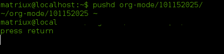
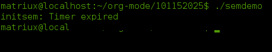
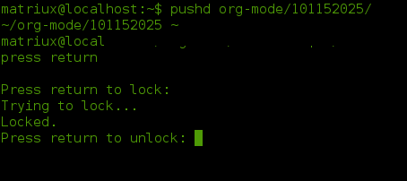
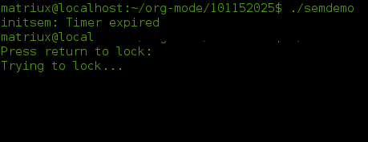
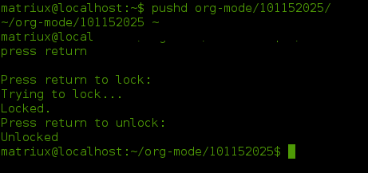
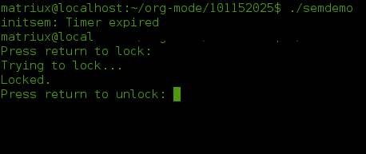
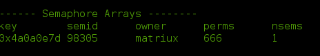
1.3 gains
I had spent most of my time at this part, Process is just like a man in society, the government(PCB) need to coordinate the people in society, and IPC is a good way to associate each process, i had learned
- Signals
- Pipe
- FIFO
- File Locking
- Message Queues
- Semaphores
These are some good tools of IPC, i had gained a lot; i didn't give up, because i love this maze, i'm full of curiosity…